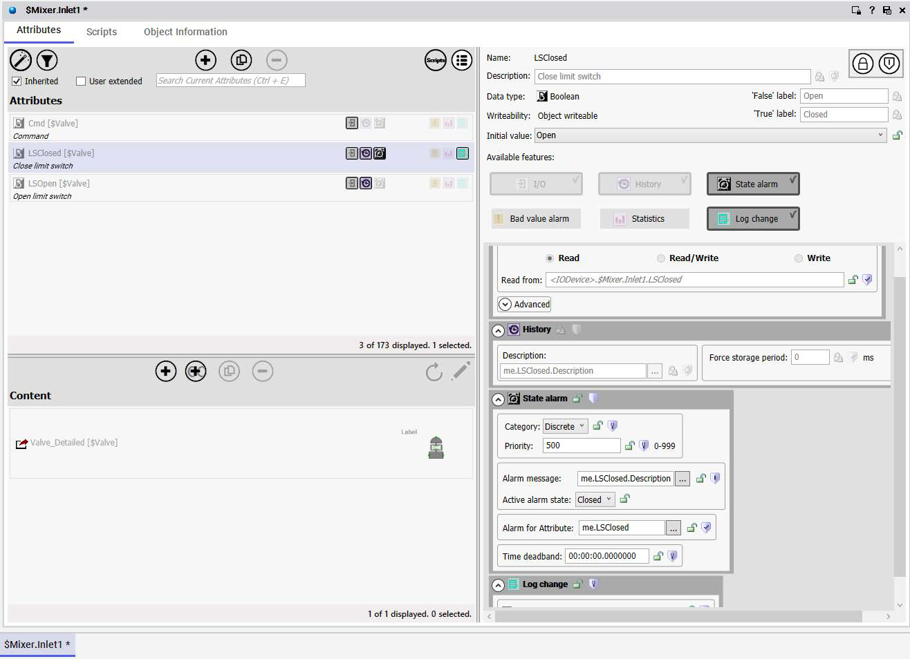
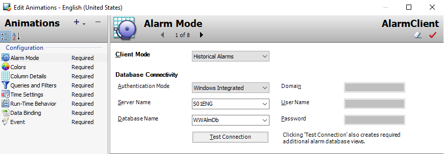

Module 5 — Alarms and Events Visualization | Pages 363–368
Object Setup
At the Object level, events can be historized by checking the Log system events in addition to user
events check box in the Log change feature. Alarms can be historized by enabling the State alarm
feature.
Configuring the Alarm Client Tool
The Alarm Client tool can be configured for historization by selecting one of the historical options
in the Client Mode drop-down list. Once selected, the following options can be configured:
Authentication Mode
Server Name
Database Name

Object Viewer showing SMixer.Inlet1 object with Attributes tab selected, displaying Cmd, LSClosed, and LSOpen valve attributes, with LSClosed properties panel showing Boolean data type, state alarm configuration with priority 500, and I/O link to hardware device

Edit Animations dialog for an AlarmClient element showing Alarm Mode configuration with Client Mode set to Historical Alarms, database connectivity settings using Windows Integrated authentication to server SD1ENG and database WWAlmDb, with a Test Connection button
Alarm DB Logger Manager
The legacy Alarm DB Logger application can be used to start and stop logging operations. The
Alarm DB Logger Manager can start as a service or a normal application.
Use the Alarm DB Logger configuration wizard to configure alarm logging, which is started from
within the Alarm DB Logger Manager.
The Alarm DB Logger Manager shows the percentage fill of the Smart Cache with alarm records.
The alarms are cached when the SQL Server connection is down or when alarms occur faster
than Alarm DB Logger can log them to the alarm database.
Configuring Alarm Database Logging
To log Galaxy alarm and event data to the alarm database, do the following from within the Alarm
DB Logger Manager:
Configure the connection to the alarm database
Select which alarms to log to the alarm database
Set the interval to log records to the alarm database
Select which method to run the Alarm DB Logger
A connection between the Alarm DB Logger and the alarm database must also be established.
The Alarm DB Logger only works with SQL Server authentication and the SQL Server
authentication must be set to mixed mode.
Configuring Which Alarms to Log
In the Alarm DB Logger Manager configuration wizard, define one or more queries to select alarms
from Galaxy alarm providers. Select a range of alarm priority values that are part of the database
query.
Use the following query syntax for remote nodes:
\\NodeName\Provider!AlarmGroup
Use the following query syntax for the local node:
\Provider!AlarmGroup
Example:
\\ProdSvr\InTouch!$System
The following is an example of using a Galaxy alarm provider. This query provides all alarms from
a specific area.
\\Galaxy!Area
Alarm Database
The Alarm Database stores alarms and events from the Alarm Manager to a SQL Server
database. Use the Alarm DB Logger utility to continuously log alarms and events to the Alarm
Database.
Set the Alarm Control to show one of the following:
Historical alarms from the Alarm Database
Historical events from the Alarm Database
Historical alarms and events from the Alarm Database
Historical Alarms
Historical Alarms
When the Alarm Control is configured in the Historical Alarms mode, only alarms stored in the
Alarm Database are shown.
Historical Events
When the Alarm Control is configured in the Historical Events mode, only events stored in the
Alarm Database are shown.
Historical Alarms and Events
When the Alarm Control is configured in the Historical Alarms and Events mode, both alarms and
events stored in the Alarm Database are displayed.
Configure the Alarm Control to show historical alarms or events, or both, which includes the
following:
Server name hosting the Alarm Database
Authentication information to connect to the Alarm Database
Maximum number of records to retrieve from the Alarm Database
Time range or duration to show in the Alarm Control
If the Alarm Control should update to the current client time
Introduction
In a previous lab, you created an alarm display for visualization of current alarms and events. In
this lab, you will use the Alarm Client to create an alarm display for visualization of historical
alarms and events logged in the alarm database. You will use the ShowGraphic() script function to
display the historical alarms.
Objectives
Upon completion of this lab, you will be able to:
Use and configure the Alarm Client to visualize historical alarms and events
Create a filter in runtime
Create and Configure the Historical Alarm Display
First, you will create and configure an alarm display to retrieve historical information.
1.
In the IDE, on the Graphics tab, in the Training toolset, create a new symbol named
AlarmHistDisplay, and then open it for editing.
2.
In Tools, click Alarm Client and place it on the canvas.
Note:
Leave some room above the Alarm Client on the canvas where you will configure
some text and buttons later in this lab.
3.
Name the element AlarmClient.
4.
Double-click AlarmClient to open it for editing.
Alarm Summary Object (Alarm Viewer control) in WindowMaker design mode displaying a tabular alarm list with columns for User, State, Node, Group, and Name, showing four alarm states: ACK, ACK_RTN, UNACK (yellow highlighted), and UNACK_RTN for a test tag
Quiz — Test Your Understanding
Q1: What are the key concepts covered in this lesson about Lab 15 – Alarm Popup Symbol?
Review the sections above for the main topics, step-by-step procedures, and important configuration details.
Q2: How does this topic relate to AVEVA System Platform?
This is part of the InTouch HMI layer, which integrates with Application Server's Galaxy for a complete visualization solution.
Module 5 — Alarms and Events Visualization. AVEVA InTouch for System Platform 2023 Training.